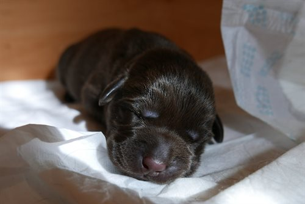
“Há anos o Dr. Marcos cuida dos nossos cachorros e gatos, confio muito e sempre recomendo para quem mora no Grajaú e região.”
Juliana Neves Alves Avaliação no Google · 5 estrelas
Saúde, carinho e atenção em cada detalhe. Cuidamos de quem faz sua vida mais feliz — com ciência, paciência e muito afeto.
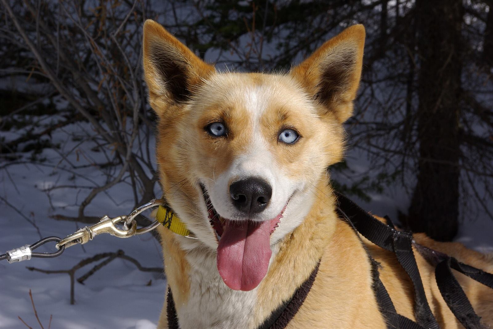
4,1 estrelas no Google, com 299 avaliações de quem já passou por aqui. Reunimos estrutura, gente qualificada e um jeito leve de atender — porque pet também sente.
Tempo de escuta, linguagem clara e manejo suave para deixar o pet tranquilo durante toda a visita.
Veterinários dedicados a diferentes áreas, com formação contínua e olhar atento a cada caso.
Consultórios, sala de exames e centro cirúrgico pensados para conforto, higiene e segurança.
Planos de saúde, vacinação e acompanhamento ajustados à idade, à rotina e às necessidades do seu pet.
Da prevenção ao tratamento, cuidamos de cada fase da vida com protocolos atualizados e acompanhamento próximo.
Avaliação clínica completa, orientação preventiva e plano de cuidado para cada fase da vida.
Saiba maisProtocolos para cães e gatos, com carteirinha em dia e lembretes para não esquecer nenhuma dose.
Saiba maisHemogramas, bioquímicos e testes rápidos com resultado ágil para decisões mais seguras.
Saiba maisRecursos de imagem que encurtam o caminho até o diagnóstico e o tratamento certo.
Saiba maisProcedimentos eletivos e de urgência com monitoramento, anestesia segura e pós-operatório assistido.
Saiba maisInvestigação de coceiras, alergias e problemas de pele e pelagem com acompanhamento contínuo.
Saiba maisLimpeza, extração e prevenção de problemas bucais que afetam o bem-estar e a alimentação.
Saiba maisPlanos alimentares para filhotes, adultos e sêniores, com orientação sobre ração e suplementos.
Saiba maisBanho completo com produtos adequados a cada pele, secagem tranquila e cuidado com unhas e ouvidos.
Saiba maisAcreditamos que cada pet merece atenção especial. Nossa missão é oferecer cuidado veterinário com responsabilidade, carinho e dedicação em todas as etapas da vida.


Profissionais que unem técnica, paciência e um jeito carinhoso de lidar com cada paciente.
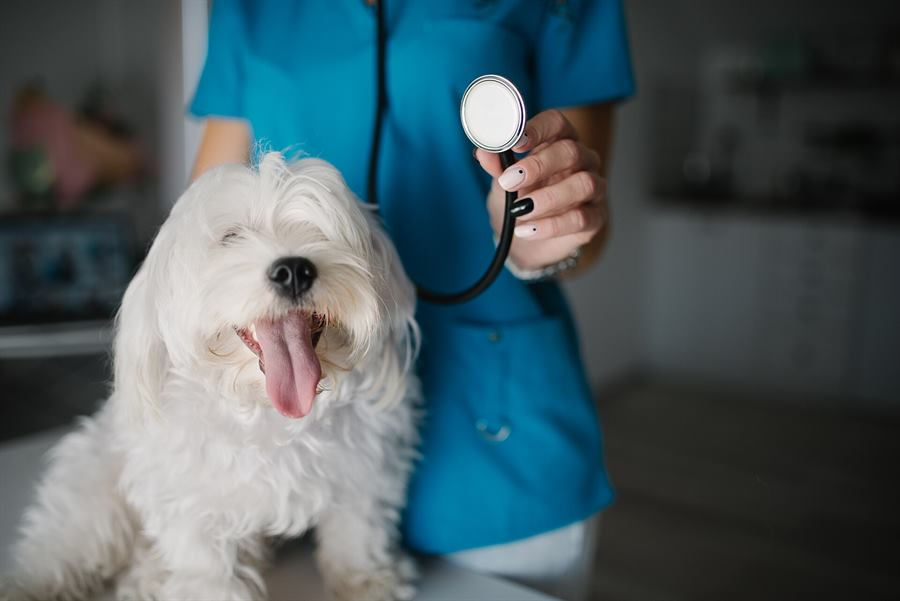
Clínica geralMédico-veterinário · Clínica geral e cirurgia
Citado em avaliações do Google como um dos veterinários mais respeitados da região, com experiência clínica e cirúrgica de cães e gatos.
Foto ilustrativa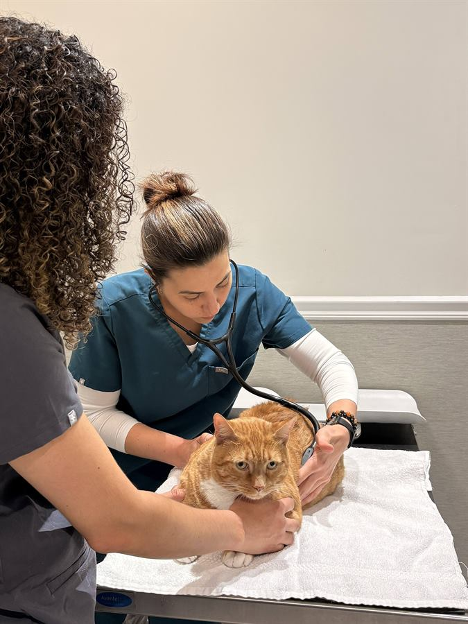
AtendimentoMédica-veterinária · Consultas e vacinas
Referência no atendimento no Grajaú, com consultas, vacinas, cirurgias, exames e orientação de rotina para cada tutor.
Foto ilustrativa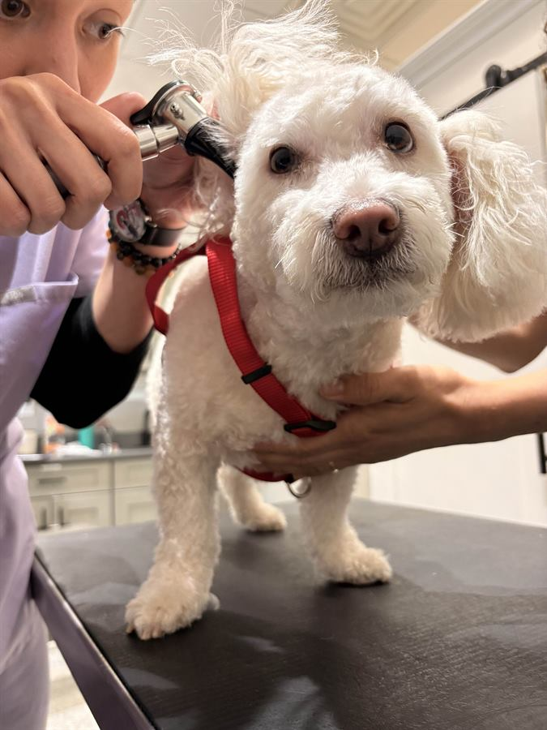
Apoio clínicoAuxiliares veterinários · Assistência
Ajudam na recepção do paciente, na contenção gentil e nos preparos de exames e procedimentos.
Foto ilustrativaEquipe técnica · Exames
Responsável pelos exames e pela qualidade das amostras, com apoio direto às decisões clínicas.
Foto ilustrativaMomentos de cuidado, recuperação e diversão vividos ao lado de quem trata cada pet como família.
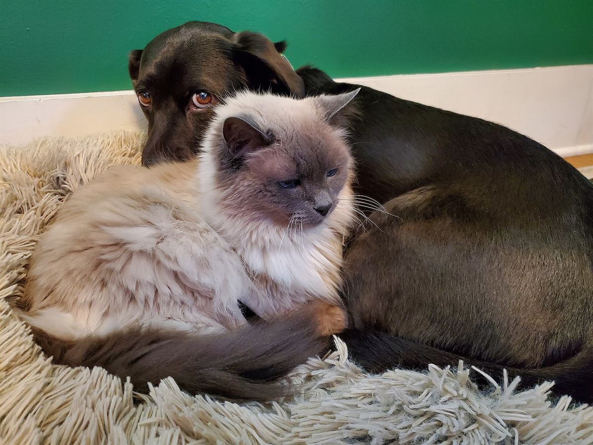
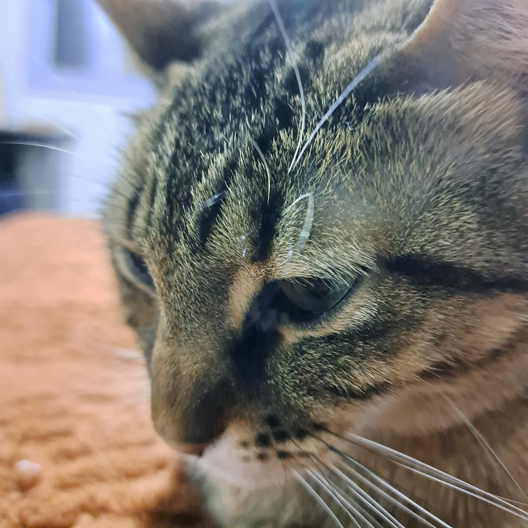

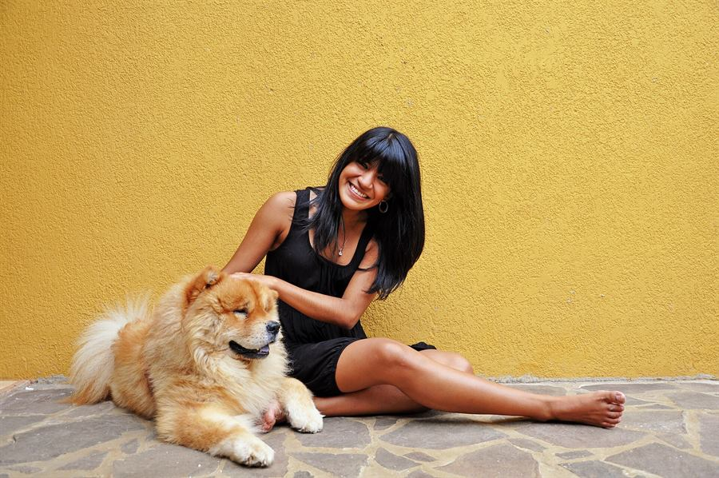
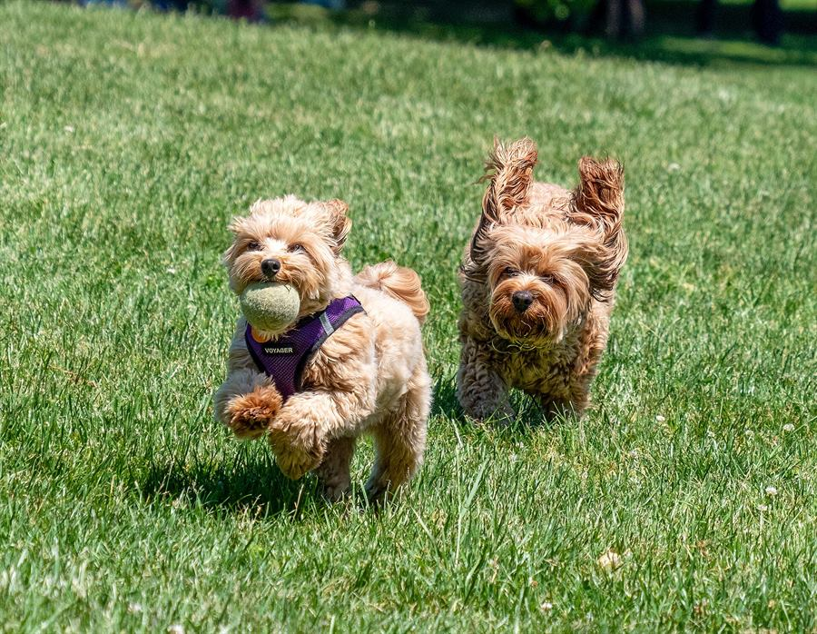
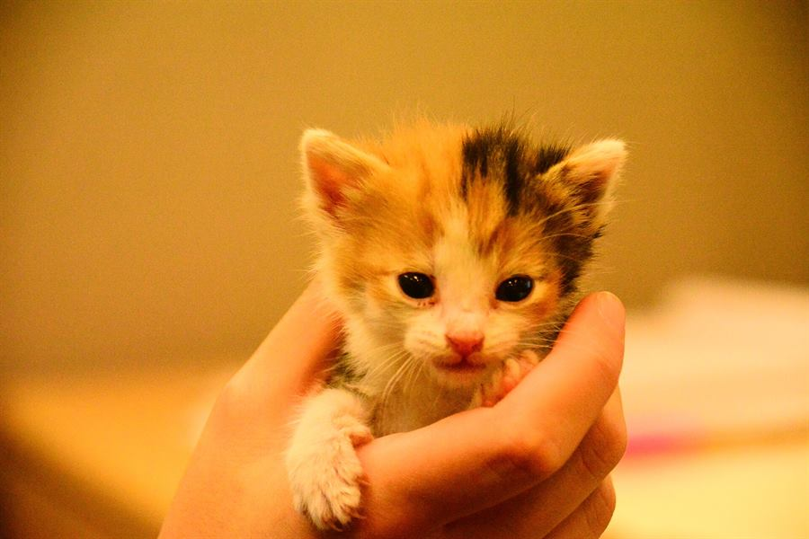
Avaliações reais de tutores publicadas no Google Maps — nota 4,1 com 299 avaliações.

“Há anos o Dr. Marcos cuida dos nossos cachorros e gatos, confio muito e sempre recomendo para quem mora no Grajaú e região.”
Juliana Neves Alves Avaliação no Google · 5 estrelas
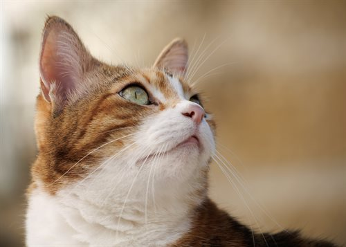
“O Dr. Marcos Miranda é um dos veterinários mais respeitados da região, com vasta experiência clínica e cirúrgica de cães e gatos, trazendo qualidade e respeito ao atendimento veterinário.”
Dan Cortez Local Guide · Avaliação no Google · 5 estrelas
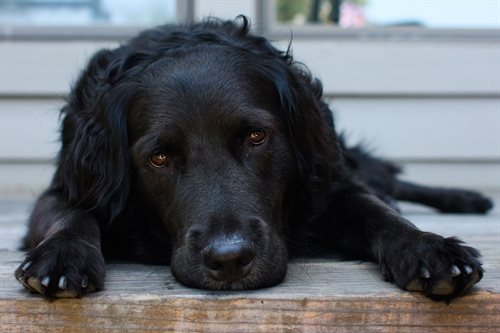
“Amei o atendimento, o melhor veterinário que levei meus cachorros, super atencioso. Vale a pena levar nessa clínica pelo atendimento do veterinário Marcos. Super recomendo.”
Cristina Macedo Local Guide · Avaliação no Google · 5 estrelas
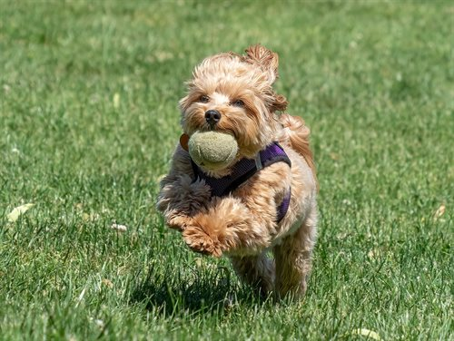
“Muito boa mesmo! Dr. Marcos muuuuito atencioso com os animais e com nós donos, afim de explicar e esclarecer todas nossas dúvidas. Recomendo demaaaais — pode ir sem medo.”
Caroline Souza Barbosa Local Guide · Avaliação no Google · 5 estrelas
Estamos prontos para receber seu melhor amigo com todo carinho. Fale com a gente e escolha o melhor horário.
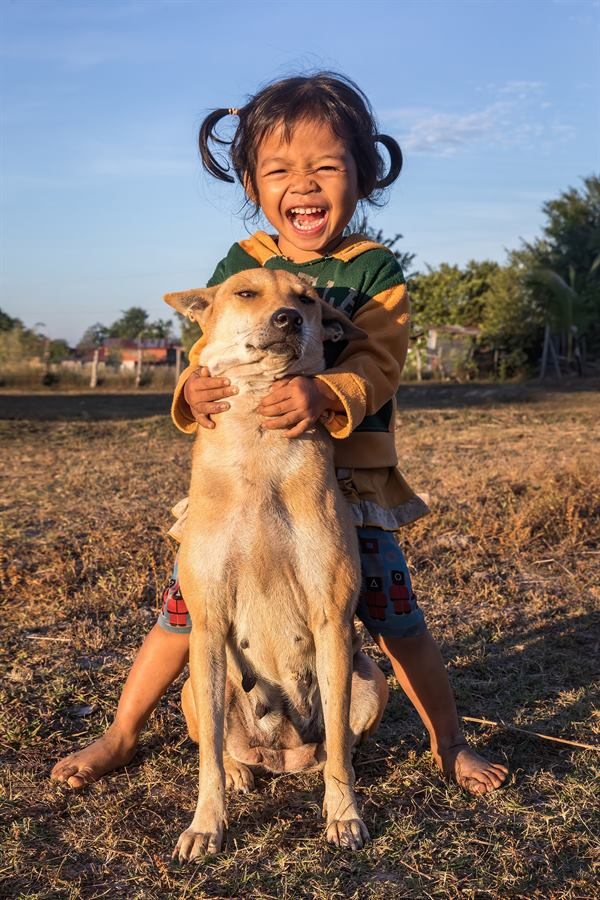
Venha nos visitar ou ligue para a gente — respondemos durante o horário de funcionamento.